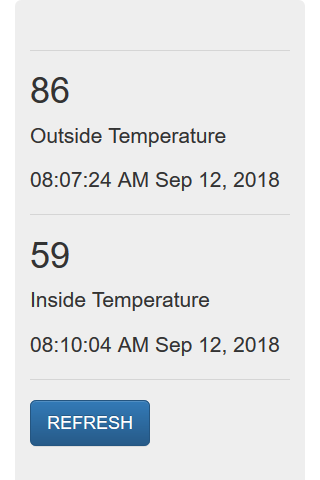
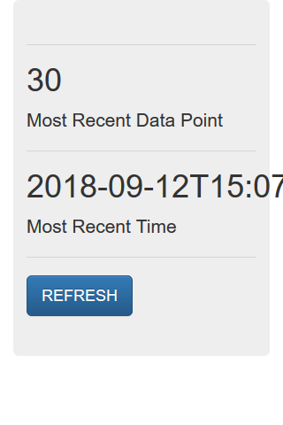
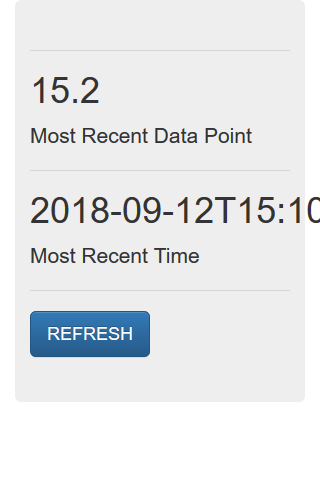

This is the fifth part of a series of posts about building an Internet of Things (IoT) server with flask, Python and ESP8266 microcontrollers. In this post, we'll add a sqlite3 database to our flask IoT server to store all the temperature data points that come in from our ESP8266-based WiFi weather stations. We will also build out the main page of the flask IoT server site to display the most recent data points pulled from the database.
Introduction
In the last post, we built in some validation for our flask IoT server web API so that only certain API keys and mac addresses are allowed. We also used Python's datetime module to add a time stamp to each data point as it comes into our flask IoT server.
This is great, but it would be really awesome to save every data point that comes in. Right now, when a new data point comes into our server, the previous data point is erased.
There are a couple of ways we could store the temperature data that comes in from our ESP8266-based WiFi weather stations:
- Save the data in a text file. Append a new line to the text file for each new data point.
- Save the data in a .csv file. Add a new line for each data point, separate fields on each line with a comma or tab.
- Save the data in a pandas dataframe. Store each data point as a row in the dataframe.
- Use a database to store the data. Each data point saved as a record in the database.
Of the four options above, I decided to use a sqlite3 database to store the data coming in from the flask IoT server web API.
Why a sqlite3 database?
Why use a sqlite3 database? One of the key reasons is the sqlite3 module is part of the Python Standard Library. We don't have to install any external packages to use sqlite3. A sqlite3 database is also light-weight and won't take up a lot of space on our server. But the real reason I choose to use sqlite3 is that the library has good documentation and I can build off the sqlite3 examples of others.
Database design
Before adding any data to the database, we need to think a little bit about database design.
Our sqlite3 database is going to be a pretty simple database. I think of the database itself as a Microsoft Excel workbook, the whole Microsoft Excel .xlsx file. We will only employ one table in our sqlite3 database. I think a database table is like a sheet or tab in a Microsoft Excel file. Each data point from the WiFi weather stations will represent one record in the database. I think of a record as one row in a Microsoft Excel file.
The web API we built brings in a couple of identifiers with each data point. Based on a valid URL such as:
https://mydomain.com/update/API_key=PHDNGI2345/mac=6c:rf:7f:2b:0e:g8/field=1/data=72.3
In the URL above we've provided:
update(to tell the flask IoT server to save the data point, not just serve a webpage)API_key = PHDNGI2345(to identify the user)mac = 6c:rf:7f:2b:0e:g8(to identify the ESP8266-based WiFi weather station)field = 1(to specify a temperature data point, not a humidity data point)data = 72.3(to specify the temperature is 72.3 degrees)
Our database needs to be able to save these four fields:
API_keymacfielddata
As well as these two additional fields:
dateandtime- some sort of primary key that uniquely identifies each record
Two example records in our database might look like:
| primary_key | API_key | mac | field | data | date_time |
|---|---|---|---|---|---|
| 1 | PHDNGI2345 | 6c:rf:7f:2b:0e:g8 | 1 | 72.3 | 2018-09-10 08:23:45 PM |
| 2 | PHDNGI2345 | 6c:rf:7f:2b:0e:g8 | 1 | 83.2 | 2018-09-11 09:45:01 AM |
Prototype the sqlite3 database
I didn't have a lot of experience building or using databases before this flask IoT server project. Before I started coding, I tried out a couple of sqlite3 commands in a Jupyter notebook.
To create a new database, we first import sqlite3 and then instantiate a new database object with the sqlite3.connect() method.
import sqlite3
db = sqlite3.connect("name_database.db")
Next, we connect to the database with the sqlite3.connect() method and create a connection object called conn. Then, from the connection object conn, we create a cursor object called cur. The cursor object executes the database commands. The commands the cursor object cur executes are written in a database query language. Learning database query language is sort of like learning a whole new programming language. I am still note really familiar with the database language query commands or syntax. Before we can add records to the database, we need to create a table in the database.
# create a database called name_database.db
# add one table to the database called names_table
# add columns to the database table: Id, first_name, last_name, age
conn = sqlite3.connect('name_database.db')
cur = conn.cursor()
cur.execute("""CREATE TABLE IF NOT EXISTS names_table (
Id INTEGER PRIMARY KEY AUTOINCREMENT,
first_name text,
last_name text,
age integer
)""")
conn.commit()
cur.close()
conn.close()
db.close()
Now to add a new record to the database, we need to:
- connect to the database, creating a connection object
conn - create a cursor object
curbased on the connection object - execute commands on the cursor object
curto add a new record to the database - commit the changes to the connection object
conn - close the cursor object
- close the connection object
conn = sqlite3.connect('name_database.db')
cur = conn.cursor()
cur.execute("INSERT INTO names_table VALUES(:Id, :first_name, :last_name, :age)",
{'Id': None,
'first_name': 'Gabriella',
'last_name': 'Louise',
'age': int(8)
})
conn.commit()
cur.close()
conn.close()
Now let's see if we can retrieve the record we just added to the database.
conn = sqlite3.connect('name_database.db')
cur = conn.cursor()
cur.execute("SELECT first_name, last_name, age, MAX(rowid) FROM names_table")
record = cur.fetchone()
print(record)
cur.close()
conn.close()
Let's add another record to the database
conn = sqlite3.connect('name_database.db')
cur = conn.cursor()
cur.execute("INSERT INTO names_table VALUES(:Id, :first_name, :last_name, :age)",
{'Id': None,
'first_name': 'Maelle',
'last_name': 'Levin',
'age': int(5)
})
conn.commit()
cur.close()
conn.close()
And again let's see the most recent record:
conn = sqlite3.connect('name_database.db')
cur = conn.cursor()
cur.execute("SELECT first_name, last_name, age, MAX(rowid) FROM names_table")
record = cur.fetchone()
print(record)
cur.close()
conn.close()
Add the sqlite3 database to the server
OK- after playing around with sqlite3, let's add some code to our flask IoT server. Let's code in a database connection, cursor object creation and record execution. This code belongs in the "/update/..." route of the flaskapp.py file.
$ cd ~
$ cd flaskapp
$ nano flaskapp.py
Within the flaskapp.py file, we'll add the database code.
# flaskapp.py
@app.route("/update/API_key=<api_key>/mac=<mac>/field=<int:field>/data=<data>", methods=['GET'])
def write_data_point(api_key, mac, field, data):
if (api_key == API_KEY and mac == MAC_ADDRESS):
conn = sqlite3.connect('data.db')
c = conn.cursor()
t = datetime.datetime.now(tz=pytz.utc)
date_time_str = t.isoformat()
c.execute("INSERT INTO data VALUES(:Id, :API_key, :date_time, :mac, :field, :data)",
{'Id': None, 'API_key': api_key, 'date_time': date_time_str, 'mac': mac, 'field': int(field),
'data': round(float(data), 4)})
conn.commit()
c.close()
conn.close()
return render_template("showrecent.html", data=data, time_stamp=date_time_str)
else:
return render_template("403.html")
At the top of this main flaskapp.py script, we'll also include a couple of lines to create the database when the flask app starts:
# flaskapp.py
if not os.path.isfile('data.db'):
conn = sqlite3.connect('data.db')
c = conn.cursor()
c.execute("""CREATE TABLE data (
Id INTEGER PRIMARY KEY AUTOINCREMENT,
API_key text,
date_time text,
mac text,
field integer,
data real
)""")
conn.commit()
conn.close()
Update the main webpage with the newest database entry
Next, we'll update the main page of the flask IoT server, the home or "/" route.
#flaskapp.py
@app.route("/")
def index():
conn = sqlite3.connect('data.db')
c = conn.cursor()
c.execute("SELECT data, date_time, MAX(rowid) FROM data WHERE field=?", ('1',))
row1 = c.fetchone()
c.execute("SELECT data, date_time, MAX(rowid) FROM data WHERE field=?", ('2',))
row2 = c.fetchone()
c.close()
conn.close()
data1 = str(round((float(row1[0]) * 1.8) + 32))
data2 = str(round((float(row2[0]) * 1.8) + 32))
time_str1 = row1[1]
t1 = dateutil.parser.parse(time_str1)
t_pst1 = t1.astimezone(pytz.timezone('US/Pacific'))
time_stamp1 = t_pst1.strftime('%I:%M:%S %p %b %d, %Y')
time_str2 = row2[1]
t2 = dateutil.parser.parse(time_str2)
t_pst2 = t2.astimezone(pytz.timezone('US/Pacific'))
time_stamp2 = t_pst2.strftime('%I:%M:%S %p %b %d, %Y')
return render_template("showdoubletemp.html", data1=data1, time_stamp1=time_stamp1, data2=data2,time_stamp2=time_stamp2)
Restart the server
Restart the flask IoT server with the following commands:
$ sudo systemctl stop flaskapp
$ sudo systemctl start flaskapp
$ sudo systemctl status flaskapp
# ctrl-c to exit
Let's try uploading a datapoint to the server using a valid URL. This GET request from a web browser will save a temperature data point in the database.
https://mydomain.com/update/API_key=DTLZ3LBY/mac=5m:ct:7f:3b:0d:a8/field=1/data=30

Now let's upload another data point, this time using field=2 and data=15.2.
https://mydomain/update/API_key=DTLZ3LBY/mac=5m:ct:7f:3b:0d:a8/field=2/data=15.2

Now let's browse to the home page of the server and view the temperatures which were saved to the database.
https://mydomain.com
Summary
It works! We have a working sqlite3 database. Each time the web API is hit with a valid URL from a web browser, a data point is saved as a record in the database. Each time we go to the main page of the flask IoT server site, we see the most recent temperatures posted.
Next steps
In the next post, we'll upload new .py files to our ESP8266-based WiFi weather stations. This will give the ESP8266-based WiFi weather stations the ability to post temperature data to our flask IoT server.